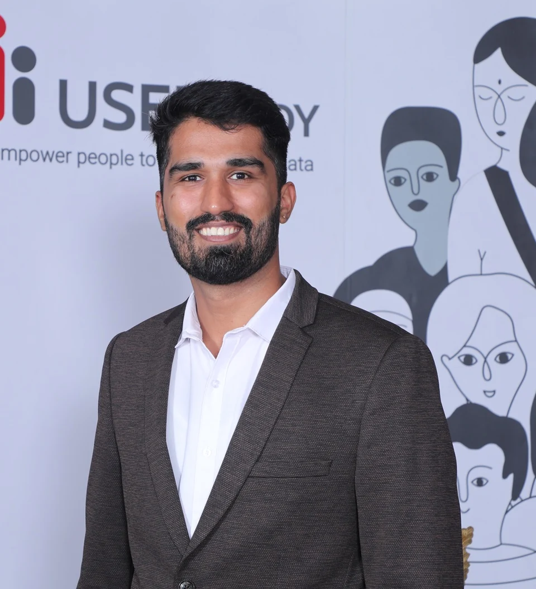
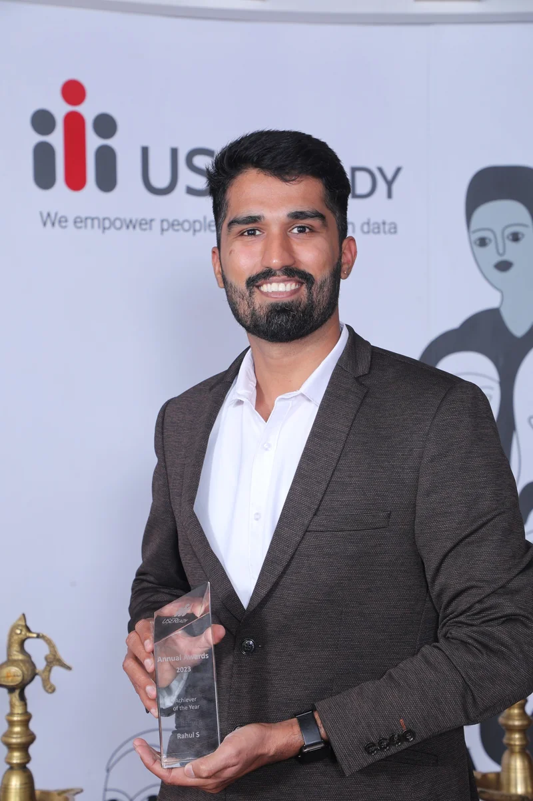

Rahul S
Lead Data Scientist at USEReady, Bengaluru
I help businesses across industries solve practical problems with generative AI and machine learning. I work with large language models and AI agents, drawing on my experience in Python, statistics, and software development.
Explore my work
Selected work
Projects in AI agents, enterprise search, broadcast monitoring, and data extraction.
Project browser
Multi-agent product recommendations
Customer-facing agents for a specialty materials manufacturer.
Read projectQuestion answering with RAG Applications that answer questions using relevant passages from source documents. USEReady
I built retrieval-augmented generation (RAG) applications for several clients. They find relevant passages in source documents and use those passages to give a language model context for its answer.
My work covered preparing the data, building the retrieval and generation steps, and developing agents. I also worked on observability and evaluation to track how the applications behaved in production and assess the answers they returned.
Multi-agent product recommendations Customer-facing agents for a specialty materials manufacturer. USEReady
I developed an autonomous AI system that handled customer interactions and suggested products. I used a multi-agent architecture so the conversation and product recommendations could run as part of the same workflow.
Enterprise search Information retrieval for a U.S. specialty materials and chemicals manufacturer. USEReady
I designed and implemented the client’s enterprise search solution. Elasticsearch provided the search layer, and I applied language model fine-tuning as part of the work to improve information retrieval.
Broadcast anomaly detection Automated detection of unusual activity for a U.S. broadcaster. Marlabs
I built and automated the anomaly detection pipeline on AWS. My work brought the detection workflow into a cloud pipeline that used Lambda, SageMaker, and SNS alongside Redshift and Aurora.
Chart and document extraction Extracting data from chart images and text from PDFs and scans. Marlabs
I built a service that used ChartOCR to extract data from chart images. I exposed it through a FastAPI web API, packaged it with Docker, and deployed it on AWS. I also worked on an optical character recognition (OCR) pipeline for PDFs and scanned images.
Website change monitoring Day-to-day comparisons across three client-selected websites. Marlabs
I used Scrapy to collect page content from the three sites and stored the collected data in Snowflake. Keeping each day’s content made it possible to compare it with the previous day’s version and see where the pages had changed.
Experience
I started in industrial automation, moved into applied machine learning at Marlabs, and now work on generative AI at USEReady.
-
to present
Lead Data Scientist
USEReady
My current focus is generative AI, especially question answering with RAG. My work at USEReady includes building retrieval and generation workflows for multiple clients and contributing to production observability and evaluation.
-
to
Senior Data Scientist
USEReady
I worked on generative AI and agent development. My USEReady projects in this area include multi-agent product recommendations for a specialty materials manufacturer.
-
to
Data Scientist
Marlabs Inc.
I built and deployed machine learning and data workflows. Projects included broadcast anomaly detection on AWS, chart and document extraction, and a website change monitoring pipeline with Scrapy and Snowflake.
-
to
Automation Engineer
Hightemp Furnaces Ltd
I worked on programmable logic controller (PLC) design, human-machine interfaces (HMIs), and electrical system design for industrial equipment.
About me
I enjoy working with people to understand the problem they’re trying to solve, then building a solution they can use.
I bring curiosity, structure, and attention to detail to that work.
My work has moved from designing industrial controls to building data pipelines, search systems, and AI applications.
Technical expertise
- Generative AI and searchLarge language models, AI agents, RAG, evaluation, LangChain, Elasticsearch, and language model fine-tuning.
- Machine learning and document processingPython, natural language processing, deep learning, computer vision, ChartOCR, and OCR.
- Deployment and data pipelinesAWS, Azure, Docker, FastAPI, Snowflake, and Scrapy.
Education and certificates
- Postgraduate Diploma in Data ScienceGreat Lakes Institute of Management, 2018
- B.Tech in Electrical and Electronics EngineeringUniversity College of Engineering, Thodupuzha, 2010 to 2014
- CertificatesGenerative AI Automation and Prompt Engineering
Recognition
- Achiever of the YearUSEReady, 2023 and 2025
- Spot AwardUSEReady,
- Hall of Fame nominationMarlabs,
- Go Getter AwardMarlabs,

Get in touch.
If you’re working on an AI agent, a search system, or a machine learning pipeline, I’d like to hear what you’re building and where I might help.